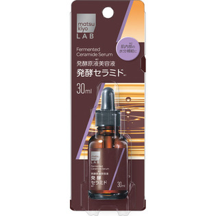

返回列表
产品名称：ｍａｔｓｕｋｉｙｏ ＬＡＢ 発酵原液美容液 セラミド

東洋新薬 ｍａｔｓｕｋｉｙｏ ＬＡＢ 発酵原液美容液 セラミド ３０ｍｌ
メーカー 東洋新薬
JANコード 4582304861144
商品の特徴
白麹菌から特殊製法で抽出したセラミド含有エキスをそのまま配合した贅沢な発酵原液美容液です。
肌のバリア機能をサポートし、肌荒れ知らずのうるおい美肌へ導きます。
成分・分量
【成分】
水、ＢＧ、アスペルギルス培養エキス液、エタノール、フェノキシエタノール
用法及び用量
【使用方法】
●手のひらに適量（４～５滴）をとり、お顔全体になじませてご使用ください。
●スポイトの奥に、美容液が入らないようにお使いください。